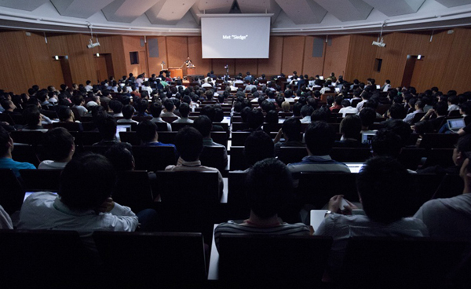

YAPC::Asia 2013 ゲストスピーカーの４名が決定！
こんにちは、櫛井です。
例年は開催告知時点で決まっていたメインのゲストスピーカーですが
今年はちょっと遅れまして、公式サイトにも先ほど追記しましたが
決定いたしましたのでお知らせいたします。

Matt S. Trout
Moose, Moo, Catalyst, fatpacker等様々なツール・ライブラリを世に送り出しているMSTこと
Matt Trout氏が満を持して初来日！
Paul J Fenwick
Paul Fenwick氏はPerl Training Autralia のマネージャーとして活躍されている傍ら、
autodie.pmの作者、White Camel Awardの受賞者、そしてPerl Best Practicesのテクニカル
エディターとしても知られています。世界中の国際的なカンファレンス等での氏のユーモラスな
トークは有名です。プライベートではセキュリティ、菌学、心理学、そして海賊のように喋る
ことを趣味としています。Paul氏も今回初来日！
Ricardo Signes
氏は学生時代に心理学を専攻したものの、卒業後その知識を生かせるのはPerlプログラマー
しかない！と思い、その後その道を邁進したそうです。 氏は大量のCPANモジュールを提供
するとともに、現在はCPANのメンテナンスされています。そのほかにもCPAN::Metaスペック
CPAN Testers Metabaseなどを開発されている他現在では perlのプロジェクトマネージャー
として活躍されています。
そして日本からは！
池邉智洋
LINE株式会社執行役員の池邉氏はポータルサイト livedoorをはじめとした Perl を利用
した大規模Webサービスの開発を統括されてきました。今回はこれまでのマネージメント
経験から得られた貴重な経験をシェアしていただきます。
以上、４名の方となります。今年も様々なトークがあるYAPC::Asia！
チケットの発売は6月くらいからを予定していますが、こちらの
イベントお知らせメールでも随時お知らせしていきますので是非ご登録ください。
イベントお知らせメール
今後、ブログなどでも情報を公開していきますが
・チケット発売情報
・スピーカー情報
・会場案内
・各種企画
などについて、随時メールにてお知らせしていく「イベントお知らせメール」
（旧名称 イベントβ登録）を用意いたしました。是非ご登録ください。
・登録方法
YAPC::Asia 2013 公式サイト にアクセスし、登録するメールアドレスを入力してから
確認メールに記載された内容にそって登録してください。
なお、確認メールは迷惑メールフォルダに入っている可能性もありますのでご確認ください。
イベントβ登録の解除機能は後日提供予定です。
不明な点などありましたら @941 か @lestrrat 宛か、ハッシュタグ #yapcasia をつけて
Tweetしていただければと思います。